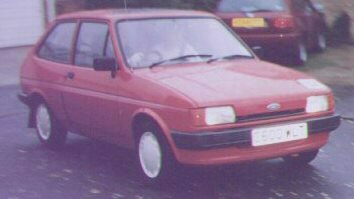
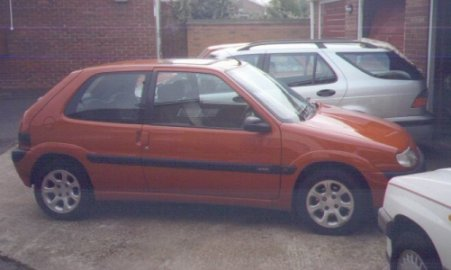
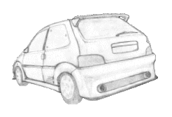
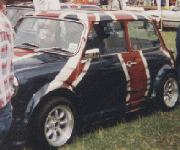
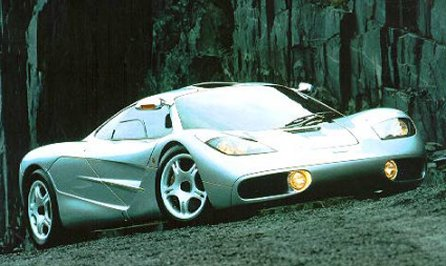

My first car was this gorgeous little Fiesta:
I was given it to share with my brother when I was sixteen by my Great Auntie Peg, so that we could learn to
drive in it. I passed my test first time in it and became the taxi driver for all my friends at school as I
was the first to pass my driving test in my year.
And then, having had the Fiesta for four years I decided it was time to move on to something bigger, and
more importantly, faster! So I bought an Astra from my uncle, who in turn had bought it from my parents.
...But unfortunately, 3 months after I got the car it was stolen, joyridden and came off second best against
a brick wall :o(
And so I brought the Fiesta out of the garage, got it back on the road and drove it for another year.

Then I decided it was time to move on again, and having saved hard from my year out I went out and found the
perfect car, my new little baby (see left).
And now I have sold the Fiesta :o( but I am more than content with my new girl racer car, which is going to
help me kick off my motorsport career!
 Click on the picture for more information on Citroen Saxos:
 And finally, one day I want to own a car like this.
 And I certainly wouldn't turn my nose up at one of these!
(Hence MiniF1... geddit?)